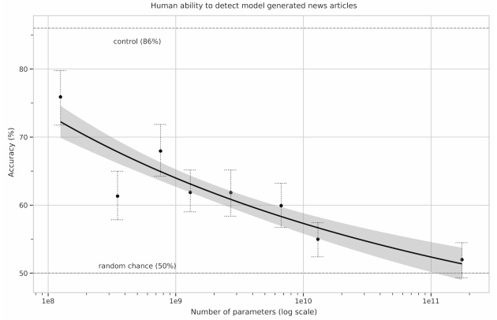
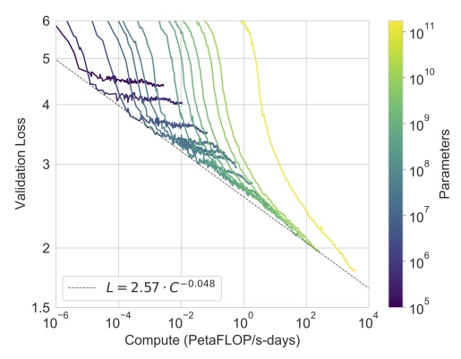

Si l’alliance entre le fantasque Elon Musk et l’austère Bill Gates a de quoi surprendre, elle vient pourtant de porter ses premiers fruits, et non des moindres. Un an après l’accord conclu entre les entreprises OpenAI et Microsoft, l’algorithme “GPT-3” sortait officiellement du bois le 28 mai 2020 sous la forme d’une publication scientifique (voir ici). S’il ne s’agit pas encore de la super-intelligence dont rêvent les transhumanistes, l’avancée est suffisamment significative pour ouvrir de vraies questions politiques. Présentations.
L’internet à la moulinette
Les performances de ce réseau de neurones surdimensionné (175 milliards de paramètres) font fantasmer et frissonner geeks et techno-sceptiques du monde entier par sa capacité à imiter l’être humain dans une incroyable diversité de contextes linguistiques. Au menu des réjouissances, on retrouve évidemment la traduction, la correction orthographique et l’auto-complétion de phrases, mais également la réponse à des questions ouvertes, la rédaction de textes imitant le style d’auteurs connus ou encore le codage de pages web et même une surprenante capacité à résoudre des problèmes d’arithmétique (pour une liste d’applications, voici ici, là ou là).
Le tout, sans la moindre supervision humaine: le réseau de neurones est simplement entraîné à prédire le prochain mot au sein un gigantesque corpus linguistique comptant plusieurs milliards de phrases. Pour donner une idée de la taille de ce jeu de données, l’intégralité de Wikipedia ne représente que 3% du corpus. Au final, c’est une bonne partie de l’Internet — sauvegardé chaque mois par Common Crawl — qui est passée à la moulinette de cet algorithme utilisant le principe de calcul “Transformer” inventé il y a à peine trois ans par les ingénieurs de Google. En bref, il s’agit d’une méthode permettant de contextualiser beaucoup plus profondément le sens de chaque mot, grâce à la prise en compte de la position du mot dans la phrase et à un mécanisme dit “attentionnel” qui permet à l’algorithme de mettre en relation des unités linguistiques distantes, de manière à faire le lien entre sujet, verbe et complément d’objet direct dans une phrase longue du type “Le gamin de huit ans mange une belle pomme” ou à prendre en compte le contexte sémantique liant les différentes phrases d’un même paragraphe.
Si ce billet de blog n’a pas vocation à passer en revue toutes les applications du GPT-3 (pour “Generative Pretrained Transformer” de troisième génération), il faut tout de même mentionner la plus spectaculaire d’entre elles: la réussite du fameux test de Turing. Ou plutôt, la réussite d’une version particulière du test de Turing puisqu’il en existe aujourd’hui de nombreuses déclinaisons. Les chercheurs d’OpenAI ont ainsi invité plus de 600 participants à évaluer si de courts textes journalistiques avaient été générés par une intelligence artificielle ou par un être humain. Verdict: les textes générés (à partir d’un titre et d’un chapeau) par la version la plus évoluée de l’algorithme sont indistinguables (pour un être humain) de ceux générés par de vrais journalistes.

Quand la taille compte
Au-delà de cette prouesse technique, l’article d’OpenAI rapporte un résultat autrement plus significatif pour l’avenir du domaine. Pour en saisir le sens, il faut se pencher sur un débat qui anime la communauté scientifique depuis l’avènement du “deep learning”, ou apprentissage profond. Malgré les performances impressionnantes de ces nouveaux réseaux dont la paternité est souvent attribuée à Yann LeCun, chercheur en chef responsable de l’IA chez Facebook, nombreux sont ceux qui pensent qu’une ou plusieurs avancées conceptuelles majeures seront nécessaires avant d’atteindre le stade de l’intelligence artificielle générale (IAG), c’est à dire de produire un algorithme surpassant significativement l’intelligence humaine. Autrement dit, il resterait du temps et de nombreux problèmes à résoudre avant de pouvoir ne serait-ce qu’esquisser le chemin vers une telle technologie. C’est d’ailleurs la position défendue par Yann LeCun dans ses nombreuses conférences publiques visant à démystifier l’IA (voir ici). Mais tous ne sont pas du même avis, et certaines perspectives sont moins apaisantes. En effet, certains pensent que le problème de l’IAG est surtout un problème de puissance de calcul, c’est à dire un problème de nature technologique plutôt que conceptuel.
Et c’est là que l’article d’OpenAI est intéressant. En effet, il montre que l’augmentation des performances semble dépendre directement de l’augmentation de la puissance de calcul, sans signes évident de saturation. Cela signifie qu’en construisant un super-calculateur encore plus massif que celui mis à disposition par Microsoft pour faire tourner GPT-3, on pourrait atteindre une performance significativement supérieure. On notera, au passage, que cette stratégie pose de réels problèmes énergétiques compte tenu de la consommation des super-calculateurs…

Il n’est donc pas exclu qu’une avancée majeure soit obtenue en mettant simplement plus d’argent et de moyens dans les infrastructures (ce qui est prévu du côté de Microsoft). Si tel est le cas, il est urgent de réfléchir collectivement aux implications. Aujourd’hui, on voit bien que les acteurs dominants du secteur — Google, Facebook et OpenAI — sont partagés entre le désir de communiquer leurs progrès de manière à attirer les meilleurs chercheurs et leur crainte de susciter dans l’opinion publique une réaction excessive qui pourrait se traduire par un boycott des consommateurs ou un effort législatif coordonné à l’échelle internationale. L’évaluation du chemin qu’il reste à parcourir avant la mise au point d’une machine ressemblant — même de loin — à une IAG conditionne évidemment le traitement politique et médiatique de cette technologie émergente. A l’heure actuelle, nul ne sait quelle part du chemin a déjà été parcourue, mais il est clair que les progrès sont fulgurants dans tous les domaines qui ont un lien direct avec l’IA: modélisation linguistique, statistiques et neurosciences en tête.
Partenariat avec Microsoft: le côté obscur de la Force?
“OpenAI was about the democratization of AI power. So that’s why [it] was created as a nonprofit foundation, to ensure that AI power … or to reduce the probability that AI power would be monopolized.” Elon Musk, extrait d’un entretien avec Swisher en 2018
Jusque très récemment OpenAI faisait figure d’exception dans le domaine de l’IA privée. Comme son nom l’indique, la quasi-totalité de son travail était partagée sur la plate-forme Github, sans que l’on comprenne bien comment l’entreprise comptait monétiser ses recherches. Peut-être était-ce un réel effort philanthropique de la part d’Elon Musk, toujours prompt à critiquer les modèles de Google et Facebook? Ce positionnement a en tout cas permis à OpenAI de compenser son retard sur les deux géants en attirant de jeunes talents soucieux des questions éthiques. Mais avec l’entrée de Microsoft au capital, le changement de paradigme est brutal. Non seulement OpenAI est officiellement devenue une entreprise à but lucratif (“for profit”), mais surtout, contrairement à son prédécesseurs GPT-2, l’algorithme GPT-3 n’a rien d’ouvert: le code n’est pas publié et l’accès à cette IA se fait au compte-goutte, de façon opaque.
Argument évoqué: la technologie serait trop “dangereuse” pour être partagée avec le public. En réalité: l’entrée de Microsoft au capital d’OpenAI marque un changement de modèle économique. Une IA surpuissante est entraînée sur un superordinateur extrêmement cher et les personnes désireuses d’utiliser cette IA devront dorénavant payer un abonnement qui ne leur donnera accès ni au code, ni au superordinateur, mais simplement à une interface permettant d’entrer des requêtes et de recueillir les résultats associés. Certes, une liste d’attente permet encore à quelques chercheurs ou développeurs web d’accéder à cette interface gratuitement, mais il est évident que cette gratuité permet surtout à OpenAI de “crowdsourcer” la recherche d’applications pour son outil. Dès lors que les niches les plus fructueuses auront été identifiées et suffisamment médiatisées, il y a fort à parier que le service sera payant pour tout le monde.
Or la maîtrise d’une technologie telle que GPT-3 va rapidement être synonyme de maîtrise du web, au sens de l’étude des corrélations et peut-être des liens de causalité entre les innombrables événements qui parcourent la toile. Quelles sont les conséquences à court-, moyen- et long-terme des explosions de Beyrouth sur les opinions publiques? Comment le Brexit affecte-t-il le lien entre les européens et les britanniques? Les iraniens sont-ils suffisamment en colère contre leur gouvernement pour qu’une opération de déstabilisation réussisse? Les français sont-ils ou non enclins à réélire Macron? Quelles banques et quelles entreprises vont s’effondrer à la suite de la pandémie? Ces enjeux géopolitiques sont déjà au centre de la question, car l’intelligence artificielle a déjà une capacité unique à relier entre elles des données si vastes et disparates qu’aucun être humain ne serait capable d’en faire la synthèse. Et il ne s’agit encore que de la capacité à “voir” le monde par le prisme de l’IA, non pas de le contrôler, c’est à dire de favoriser un scénario plutôt qu’un autre en facilitant ou limitant la transmission de certaines informations.
Le retard européen en matière d’IA et de Big Data
Face à ces perspectives, un repli technophobe n’est pas à exclure. Mais cela pourrait desservir la société dans son ensemble car la technologie continuera de progresser, avec ou sans l’aval des populations. La grande question, il me semble, est plutôt celle du contrôle public de cette technologie. Or à l’heure actuelle, si la France vient de se doter du supercalculateur Jean Zay, il n’est pas sur que les crédits soient suffisant pour entraîner un réseau de neurones comme GPT-3 (on parle de plusieurs millions d’euros). A titre de comparaison, le budget de l’INRIA (Institut National de Recherche en Informatique et Automatique) s’élevait en 2018 à 240 millions d’euros (voir ici), quand Google Deepmind coûte à Google environ 500 millions d’euros par an et quand l’investissement initial de Microsoft dans OpenAI s’élève à 1 milliards d’euros.
On le sait, l’Europe est loin derrière les États-Unis et la Chine en matière de “Big Data” et d’IA. Elle ne possède ni réseau social ni moteur de recherche ni plate-forme de vente en ligne, ni moteur vidéo rivalisant de près ou de loin avec Facebook, Google, Amazon et Youtube. Or si une importante prise de conscience a abouti à des progrès en matière de collecte et de stockage des données par ces acteurs, la question de leur traitement reste en retrait. Même avec le filtrage du RGPD, même en se limitant au web public, une énorme quantité de données reste disponible pour les algorithmes d’IA. Si l’on schématise, OpenAI traite aujourd’hui des données publiques avec un algorithme privé tandis que Google et Facebook traitent des données privées avec des algorithmes publics (dans une mesure toute relative). Dans les deux cas, l’intelligence — pris dans le sens anglo-saxon de “renseignement” — est privatisée. Et dans les deux cas, les énormes super-ordinateurs dédiés au traitement des données sont inaccessibles pour les chercheurs, les ONG ou les pouvoirs publics.

En clair, l’Europe doit rattraper son retard au plus vite afin de permettre aux technologies d’intelligence artificielle de rester (redevenir) des outils publics dédiés à la recherche et à la poursuite du bien commun. Certains programmes d’investissement vont dans ce sens avec notamment la création de ressources de calcul dédiées, mais c’est encore trop peu compte tenu de la distance qui nous sépare des autres acteurs. Certes, les applications concrètes de la modélisation linguistique et l’analyse profonde du web rendues possibles par les algorithmes du type GPT-3 sont encore balbutiantes, mais il faut réaliser qu’une bonne partie de la recherche d’information passera par ce genre de système dans le futur. En fait et lieu d’une requête Google produisant des milliers de résultats, nous poserons directement nos questions à un descendant de GPT-3, et cela vaudra aussi bien pour les “civils” que pour les chercheurs, les journalistes et même sans doute les militaires. L’interaction avec les ordinateurs prendra alors un tout autre sens. Qu’ils soit super-intelligents, intelligents, conscients ou inconscients, ces algorithmes seront de facto nos interlocuteurs quotidiens dans une voire deux décennies. S’il reste pour l’instant anecdotique en raison de performances limitées, le principe est d’ailleurs déjà à l’oeuvre avec Siri ou Google Voice.
Vers une IA européenne publique?
Contrairement aux questions liées à la vie privée, l’IA ne fait pas encore réellement l’objet d’un débat éthique ou d’une véritable réflexion stratégique. Le débat est souvent pris en tenaille entre deux positions aussi naïves l’une que l’autre: d’une part, les optimistes qui font confiance aux acteurs privés type GAFAM pour s’autoréguler, d’autre part, les pessimistes qui voient déjà un avenir catastrophique se dessiner quelque part entre les imaginaires de 1984, du Meilleur des mondes et de Minority Report. Dans les deux cas, c’est l’inaction qui l’emporte. Faudra-t-il attendre qu’un scandale aussi important que celui de Cambridge Analytica pour que les gouvernements français et européens se décident à s’emparer de la question? Se focaliser seulement sur les risques liés à “l’astroturfing” et aux violations de la vie privée, aussi réels soient-il, ne suffit pas. Car si l’on peut limiter la fuite des données, contrôler leur stockage et limiter l’influence des réseaux sur les choix électoraux, on ne pourra pas empêcher la Chine et les États-Unis de développer des algorithmes d’intelligence artificielle toujours plus perfectionnés.
La seule option viable semble être d’entrer dans la danse pour tenter de faire jeu égal avec les autres superpuissances. Au vu de la quantité d’ingénieurs français et européens travaillant dans les services IA de Google et Facebook, nous en avons largement les moyens. Et à l’heure où la Silicon Valley met en place d’immense réseaux de neurones capables de digérer le web entier à des fins mercantiles voire militaires, nous autres en avons peut-être même le devoir.
Imaginer une IA publique et transparente au service de la connaissance et du progrès est plus que jamais nécessaire. A l’échelon national, doubler le budget et les effectifs de l’INRIA permettrait par exemple de donner une véritable impulsion en ce sens (sans pour autant négliger les labos universitaires ou CNRS impliqués dans le domaine). Malheureusement, sauf surprise, il ne faudra pas compter sur le président de notre start-up nation pour prendre une telle décision et la gauche peine encore à articuler une pensée claire et des propositions fortes sur ces questions.
Pour aller plus loin
Présentation exhaustive (en anglais) de l’algorithme GPT-3 par Steve Omohundro
Discussion très intéressante des enjeux liés à la souveraineté numérique sur la chaîne Thinkerview, avec Tariq Krim et Bernard Benhamou.
Le prédécesseur de GPT-3, GPT-2 a été utilisé dans de nombreux projets. Un des plus ludiques est sans doute AIdungeon, qui permet d’interagir directement avec ce réseau de neurones de 1.5 milliards de paramètres. Mais on peut également citer Bloomsday et Sunsprings, deux films courts dont le script a été généré par GPT-2.
Le chercheur Raphaël Millière a utilisé l’algorithme GPT-3 pour produire des textes philosophiques assez fascinants.
I asked GPT-3 to write a response to the philosophical essays written about it by @DrZimmermann, @rinireg @ShannonVallor, @add_hawk, @AmandaAskell, @dioscuri, David Chalmers, Carlos Montemayor, and Justin Khoo published yesterday by @DailyNousEditor. It’s quite remarkable! pic.twitter.com/W1PVlsHdu4 — Raphaël Millière (@raphamilliere) July 31, 2020
Voir aussi la méthodologie (on notera que l’algorithme a été guidé par le chercheur) et d’autres textes sur son compte Twitter.
Exemple de texte journalistique généré par l’algorithme GPT-3:
Title: United Methodists Agree to Historic Split
Subtitle: Those who oppose gay marriage will form their own denomination
Article: After two days of intense debate, the United Methodist Church has agreed to a historic split - one that is expected to end in the creation of a new denomination, one that will be «theologically and socially conservative,» according to The Washington Post. The majority of delegates attending the church’s annual General Conference in May voted to strengthen a ban on the ordination of LGBTQ clergy and to write new rules that will «discipline» clergy who officiate at same-sex weddings. But those who opposed these measures have a new plan: They say they will form a separate denomination by 2020, calling their church the Christian Methodist denomination. The Post notes that the denomination, which claims 12.5 million members, was in the early 20th century the «largest Protestant denomination in the U.S.,» but that it has been shrinking in recent decades. The new split will be the second in the church’s history. The first occurred in 1968, when roughly 10 percent of the denomination left to form the Evangelical United Brethren Church. The Post notes that the proposed split «comes at a critical time for the church, which has been losing members for years,» which has been «pushed toward the brink of a schism over the role of LGBTQ people in the church.» Gay marriage is not the only issue that has divided the church. In 2016, the denomination was split over ordination of transgender clergy, with the North Pacific regional conference voting to ban them from serving as clergy, and the South Pacific regional conference voting to allow them.
En gras, l’information de départ donnée à l’algorithme, le reste du texte est généré automatiquement.